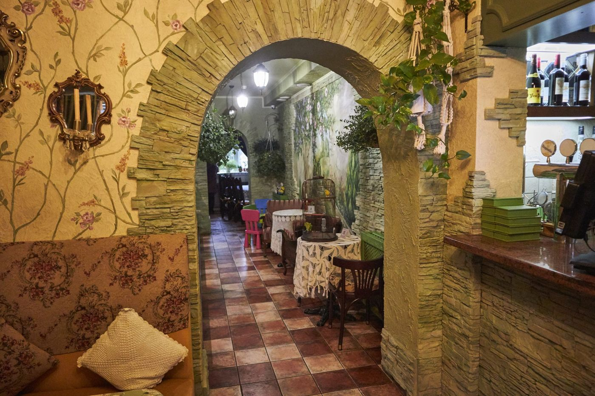
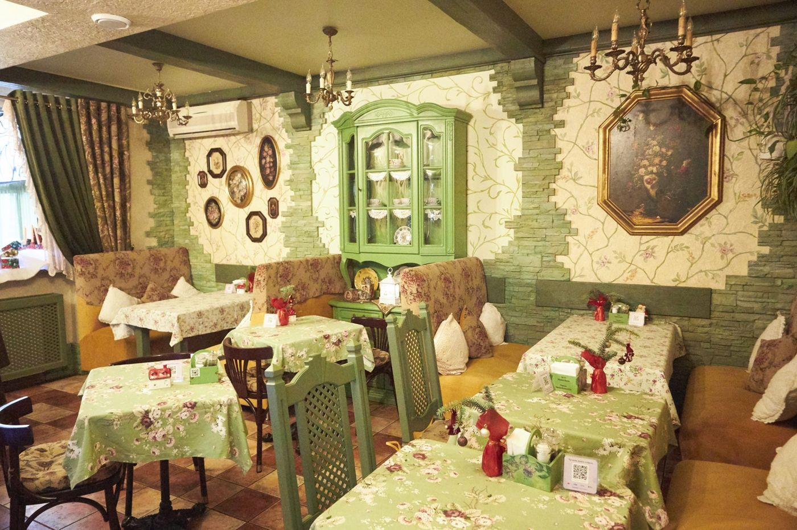
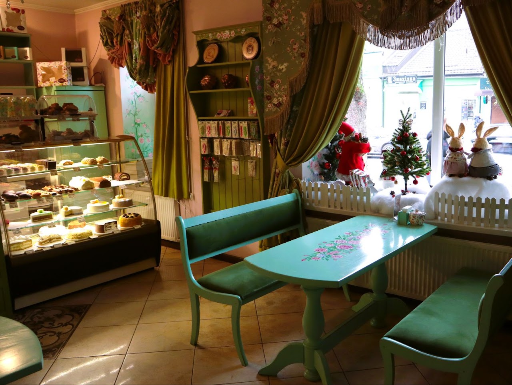

вул. Драгоманова, 12Є
Дві локації в історичному центрі з 2010 року
Теплий салон смаків: ресторація та кондитерська
Затишок кам'янецької давнини, живі квіти й два настрої під одним ім'ям: камерна зала ресторації біля Старої Фортеці та світла вітрина авторських десертів у центрі міста.
вул. Лесі Українки, 35а
Кафе-кондитерська
Десерти та кава →


Атмосфера та настрій
Дві затишні зали, де кольори створюють тепло
Замість холодного глянцю — живий кам'янецький затишок: фісташково-оливкова зала ресторації з розписним буфетом і камерна кондитерська зі смарагдовим оксамитом, оливковими шторами та підсвіченою вітриною десертів.
Оливково-фісташкова зала
Смарагдовий оксамит кафе
Сонячна охра й латунь
Тепле дерево та камінь
Обрати локацію на карті
Дві поруч розташовані локації
Як нас знайти у Кам'янці-Подільському
Ресторація Madam Bushe
Адреса: вул. Драгоманова, 12Є (біля Старої Фортеці)
Графік: Щодня 11:00 – 23:00
Формат: Основна зала, тераса, бенкети та бронювання столів
Кафе-кондитерська Madam Bushe
Адреса: вул. Лесі Українки, 35а (Центральний променад)
Графік: Щодня 08:30 – 21:00
Формат: Ранкова кава, десерти з собою, індивідуальні торти